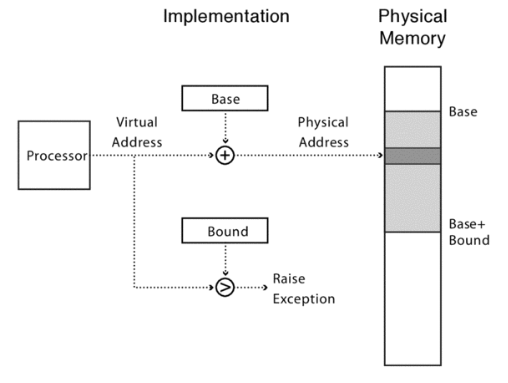
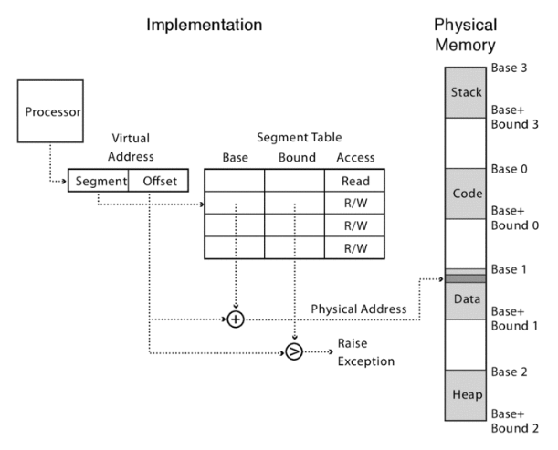
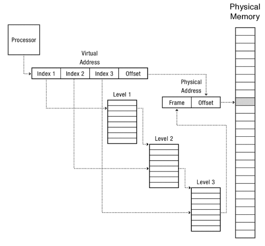
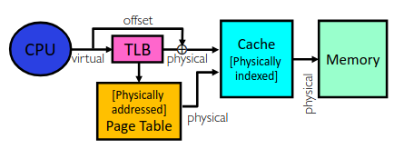
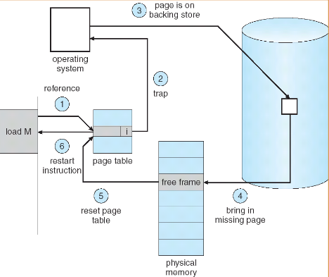

Memory
Table of Contents
1. Address Translation
1.1. Base and Bound
We can define a block of memory a program can use using a base address and a bound offset/size. The virtual address space of the program starts at zero, so our OS can translate on-the-fly these addresses by adding them to our base address. Protection is done by ensuring that our addresses never exceed the bound:

Base and bound has several problems, however. Base and bound is wasteful, as it must dedicate physical memory for future use. Additionally, we must also solve the fragmentation problem, as the kernel must somehow fit whole processes into contiguous blocks of memory. It is also hard to do inter-process sharing, since processes are not allowed to go outside its bounds.
1.2. Segmented Memory
Instead of just having one base and bound for a program, the hardware can support an array of pairs of base and bounds for each program. This is called segmentation since we can split our virtual memory into several segments. The higher order bits of the virtual address are used to index into the array:°

Now, this allows us to share segments between processes, while still keeping other segments like data and stack separate.
Intel x86 also includes six special segment registers that manage memory segmentation. These are split into code (CS), stack (SS), data (DS), extra (ES), and additional segments (such as FS and GS).
However, the principal downside of segmentation is the overhead of managing many dynamically changing memory segments. At some point, fragmentation is still a problem.
1.3. Paged Virtual Address Space
We can also break the entire virtual address space for our program into equal sized chunks (i.e. pages), with each page having its own base. To prevent fragmentation, these page sizes are usually small (e.g. 1K-4K). The processor translates each virtual address according to the bases stored in a page table. Each process has its own page table in physical (kenel) memory, and is pointed to by the page table base register (PTBR).
A problem is depending on how much memory we have and how big each page is, our page table can become very large per process. Say the offset is 12 bits, then a 64-bit address space has a total of \(2^52\) with 8 bytes each, which comes out to 36 exabytes: a ridiculous amount of memory. Additionally, a lot of our page table is sparse, which means that many of the entries are unused.
A solution is to use a multi-level page table:

Each page table is the size of a page. Only the top-level page table needs to be filled out; lower levels of the tree only need to be allocated if those portions of the virtual address space are in use.
Some processors (e.g. PowerPC, UltraSPARC, IA64) also use a hash table instead of a multi-level page table, and this is often called a inverted page table (as opposed to forward page tables seen previously). This size is independent of virtual address space and is directly related to the amount of physical memory. A downside, however, is the complexity of managing hash chains in hardware.
1.3.1. Page Table Entries
A page table entry (PTE) is a pointer to the next-level page table or to an actual page. It consists of the pointer as well as several different status bits, depending on the architecture:
- P: present bit (same as valid bit in other architectures)
- W: writeable
- U: user accessible
- A: accessed: page has been accessed recently
- D: dirty: page has been modified recently
2. Translation Lookaside Buffer
Memory address translation is accomplished by the memory management unit, or MMU. The MMU must attempt to translate virtual addresses to physical addresses on every instruction fetch, every load, every store. It generates a “page fault” (trap) if it encounters an invalid page table entry. The MMU must do a page table tree traversal to translate each address, which turns a potentially fast memory access into a slow multi-access table traversal.
The solution is to cache translations in a translation lookaside buffer (TLB). The TLB is a small hardware table the contains the results of the most recent address translations, mapping a virtual page to a physical page.
Oftentimes, the TLB is placed in serial with the cache lookup. This is called a physically-indexed, physically-tagged cache:

What structure for the TLB cache makes sense? Since the TLB is in the critical path for memory access, it makes sense that we want to optimize for speed here, which seems to argue for either direct-mapped or low-associative structures. However, small TLBs are usualy organized as fully associative caches. If that is too slow, we can put a small direct-mapped cache in front, called a TLB slice.
We also must consider what we do to the TLB on a context switch. Since the virtual address space changes when we change processes, the entries in the TLB are no longer valid. We can invalidate (or flush) the TLB when we context switch, but this may be expensive if we are switching processes constantly.
2.1. Page Faults
These are the steps in handling a page fault:

A precise exception point is where the state of the machine is preserved as if the program executed up to the offending instruction. All previous instructions have completed, and the offending instruction and all following instructions act as if they have not even started. Implementing this becomes difficult once you consider pipelining, out-of-order execution, etc. However, modern techniques for out-of-order execution and branch prediction help implement precise interrupts.
3. Demand Paging
Modern programs require a lot of physical memory, but they don’t use all their memory all of the time: it is wasteful to require all of user’s code to be in memory. Demand paging is the idea that we can use memory as a “cache” for disk: on program startup, we don’t load all of a program’s instructions into memory, just the ones we need right now. If we access a part that is not loaded, we handle it with a page fault and “cache” it into our memory.
4. Page Replacement Policies
- First-In First-Out (FIFO): replace the oldest page in the table. However, this throwse out havily used pages instead of infrequently used ones.
- Random: this is the typical solution for TLBs as it uses simple hardware. However, it is unpredictable.
- Minimum (MIN): replace the page that won’t be used for the longest time. We use the past to predict the future.
- Least Recently Used (LRU): replace the page that hasn’t been used for the longest time. Seems like LRU should be a good approximation to MIN.
When you add memory, the miss rate should drop. Yet for some policies, this doesn’t happen! For FIFO, increasing the number of page frames actually increases the number of page faults for certain memory access patterns. This phenomenon is known as Bélády’s anomaly, and it rules out FIFO as a good policy.
We also can’t use MIN, since it requires the future. That leaves us with LRU.
To implement LRU, use a list. On each use, remove the page from the list and place it at the head. Then, the LRU page is at the tail of the list. But realize now that every load or store now requires many loads and stores to keep track of the list.
4.1. Clock Algorithm
Instead, we can approximate LRU using status bits using the clock algorithm. The “hand” of the clock advances only on page fault: it advances around a circular buffer, checking for the use bit. We know that the hardware sets the accessed or use bit to 1 on each reference; therefore, if the use bit isn’t set, then that means it hasn’t been referenced in a long time. If the use bit is 0, it becomes a candidate for us to replace.
We can also modify it to use the Nth chance algorithm: you give each page N chances, and only replace it if it’s use bit is still 0 after N sweeps. The OS keeps a count per page and increments the count when the use bit is 0.
We also have to consider modified or dirty pages: if we see the dirty bit is set, we also must write the data in the memory back to disk before replacing it. Sometimes we would also give dirty pages an “extra chance,” since it takes extra overhead to write.
But do we need the dirty bit? An alternative is to use the writable bit as a proxy: at first, we set all pages to read-only. Then, when we need to write to a page, we trigger a page fault: if we end up writing to the page, the page fault sets the writable bit to 1. Then, the writable bit becomes the same thing as the dirty bit.
4.2. Reverse Page Mapping
Evicting a page frame becomes hard in the presence of shared pages: given a physical page, you must find all the page tables where it is referenced and mark it as invalid. Thus, the reverse mapping mechanism must be very fast.
5. Page Allocation
How do we allocate memory among our different processes? Each process needs some number of minimum frames to make forward progress. Some schemes we can use:
- Equal allocation: every process gets the same amount of page frames.
- Proportional allocation: allocate according to the size of the process.
- Priority allocation: proportional allocation scheme using priorities rather than size.
If a process does not have “enough” pages, the page-fault rate is very high. This leads to thrashing, which is when a process is busy swapping pages in and out with little or no actual progress.